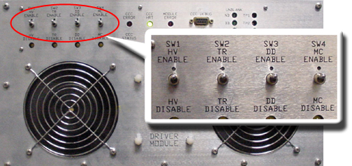
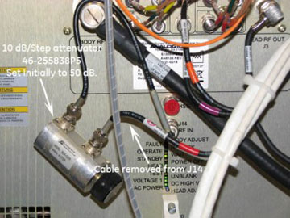
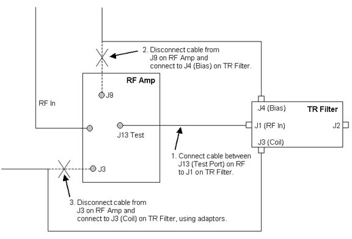
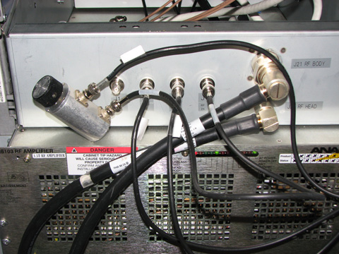
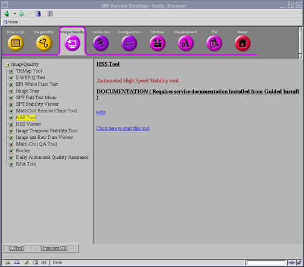
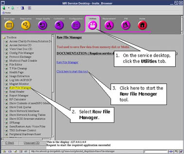

Proprietary to General Electric
Direction 5500113, Rev# 3
Discovery MR750 3.0T Service Methods
Module Version 17.0, Version Date 9/9/10
Proprietary to General Electric |
| Required Persons | Preliminary Reqs | Procedure | Finalization |
|---|---|---|---|
| 1 | Not Applicable | Not Applicable | Not Applicable |
The High Speed Stability (HSS) test evaluates the effects of vibration, or other rapid environmental or system phenomena, on the stability of the MRI process, or of the hardware used to receive and process MRI signals.
HSS Theory
The HSS portable storage device drives the Exciter with a rectangular RF pulse that is modulated to full scale to create a simple FID, and collects the resultant FID with the Receiver. The FID is used to measure the frequency deviation or phase deviation over time. An Fast Fourier Transform (FFT) is performed on the deviation data to produce a frequency spectrum of any magnetic field disturbance within the selected bandwidth for the test.
| Item | Qty | Effectivity | Part# | Manufacturer | |
|---|---|---|---|---|---|
| Base Plate | 1 | - | 46-320332G1 | - | |
| Universal SST Kit | 1 | - | 5110731-4 | - | |
| 3.0 Adapter | 1 | - | 5194320 | - | |
| Item | Qty | Effectivity | Part# | Manufacturer |
|---|---|---|---|---|
| None required | 0 | - | - | - |
Disable TR Driver faults by moving SW2 on the Driver Module to TR Disable.
Illustration 1: TR Driver Module

Insert 40 dB of attenuator in between RF Input (J14) and the normal RF Input cable.
Disconnect the RF Input cable from J14 of the RF Amplifier.
Connect the in-line 10 db Step Attenuator to J14 and the RF Input cable just removed.
Illustration 2: Connecting 10 db Attenuation

This is the preferred method for running HSS, as the test output is more consistent.
Disable RF Enable on the Exciter.
Connect the TR Filter to the RF Amplifier as shown below.
Illustration 3: HSS Connection for Test Port

Enable RF Enable on the Exciter.
Proceed to HHS Setup and Scan to execute the HSS procedure.
| ||||
| Verify that 40 dB of attenuation is in series with the RF Input to prevent damage to the coil. Using the Test Port is recommended as the RF output signal has better stability than the Head output. | ||||
Disconnect RF Input cable from the RF Amplifier (J11).
Insert the 10 dB Step Attenuator, and set it to 40 dB in series with the RF input. Use additional RF cable between the attenuator and RF Amp input. If the signal needs to be reduced, insert an additional 10 dB attenuator with 1 dB step.
Illustration 4: Adding Attenuation to RF Input

| ||||
| Sample motion can affect HHS output. To ensure the vial fits snugly into the coil housing, wrap a piece of tape completely around the vial before placing it into the holder. | ||||
Insert the 0.25 m NiCl2 Sample Vial into the coil.
Ensure no solution is trapped in the top section of the vial before inserting it into the coil.
If solution is trapped in the vial top, correct by flicking the vial with your finger to send the solution to the bottom of the vial.
Position the base plate at the head end of cradle.
Place and lock the coil into the corner of the base plate.
Connect the adapter to the head carriage. (See Illustration 5.)
Landmark on the center of the base plate. (Do not try to landmark on the HSS coil).
Connect the Coil Adapter to the LPCA:
Connect P-Port Connector of DV Coil Adapter (P/N 5194320) to the LPCA, and connect the coil to Coil Adapter BNC plug to coil as shown in Illustration 5.
Illustration 5: Coil Placement

At the MR Service Desktop, select the Image Quality icon, and start the HSS Tool by clicking on the Click here to start this tool link.
Illustration 6: Selecting HSS Tool

Verify the following on the HSS GUI:
Passes: =5
Bandwidth: =45Hz
Select Port: = either Head Port or Test Port, depending on configuration
Select [Scan] on the HSS GUI. (The prescan and scan will be done automatically. No user setup is required.)
| NOTE: | The scan will take a few minutes to complete. |
Illustration 7: HSS GUI

After the scan is finished, the HSS Viewer will automatically display. See HSS Results.
Restore all connections to the RF Amplifier.
Remove all HSS hardware (coil, test cables, etc.) from the bore.
Position the TR Driver switch on the Driver Module to TR Enable.
HSS creates extensive locked raw files that must be removed to restore locked raw file capacity. Follow the steps in Illustration 8.
Illustration 8: Restoring Locked Raw File Capacity

Under the DISK heading, highlight the HSS files, and click [Delete].
Perform at least one head scan to verify proper system operation.